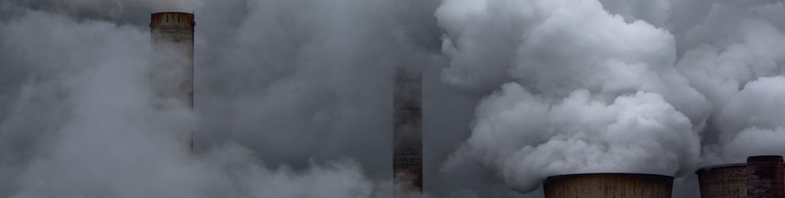

设为首页
|
加入收藏
网站首页
环境污染
环境保护
保护案例
新闻动态
游客留言
法律信息
联系我们

1
2
3
新闻中心
泰州市检察院对一起污染环境诉讼
北京机动车将征收环境
环境污染的危害
北京深陷垃圾围城
创意生活垃圾桶入住城市
联系我们
联系人：吴朋
电话：0523-46778866
邮箱：kefu@jnget.com
客服QQ：2986375542
地址：泰州市海陵区春晖路
由于人们对工业高度发达的负面影响预料不够，预防不利，导致了全球性的三大危机:资源短缺、环境污染、生态破坏。环境污染指自然的或人为的破坏，向环境中添加某种物质而超过环境的自净能力而产生危害的行为。(或由于人为的因素，环境受到有害物质的污染，使生物的生长繁殖和人类的正常生活受到有害影响。)由于人为因素使环境的构成或状态发生变化，环境素质下降，从而扰乱和破坏了生态系统和人类的正常生产和生活条件的现象。...[
查看详细
]
版权所有 © 网站名称 未经许可 严禁复制
版权所有
信息来源:
中国环境信息网